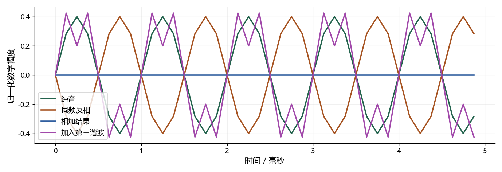

看图理解 · 跟着推演 · 对照真实结果
第01课 · 把声音的三个旋钮看明白
用一段一千赫兹的波形，亲手分清幅度、频率、相位与声音叠加。
文字和视频配合学，内容没有删减
上方“读完整图文”是本课完整教程，包含详细解释、公式、代码和练习；这里的视频讲解核心算例，不代替全部正文。可以先读再看，也可以看不懂时回到文字逐步推导。跟着视频暂停预测，解释运行图的横轴、纵轴和曲线，再做下面的自测。
先修：只需要知道一秒等于一千毫秒；NumPy写法会逐行解释。
- 会从坐标轴和周期读懂波形
- 知道幅度、频率、相位各改变什么
- 能解释同频反相为什么抵消，以及抵消的条件
跟着运行：注释代码、实际输出与结果图
下面代码在生成本站时实际执行。这里只是教学小实验，不是完整模型训练或业务设备测评。
import numpy as np
fs = 8000 # 每秒采样八千次
n = np.arange(80) # 80个整数编号，不是秒
t = n / fs # 编号换算成秒
f = 1000 # 一千赫兹，每秒振动一千次
tone = 0.4 * np.sin(2 * np.pi * f * t)
# 相位增加π，相当于同频波形上下翻转
opposite = 0.4 * np.sin(2 * np.pi * f * t + np.pi)
summed = tone + opposite # 逐个时间点相加
# 加入第三谐波，改变形状，不等于整体频率乘三
rich = tone + 0.2 * np.sin(2 * np.pi * 3 * f * t)
t_ms = t * 1000 # 绘图横轴使用毫秒
print('数组形状:', tone.shape)
print('每周期点数:', fs / f)
print('前八点:', np.round(tone[:8], 3))
print('反相残差:', np.max(np.abs(summed)))
本次实际输出
数组形状: (80,) 每周期点数: 8.0 前八点: [ 0. 0.283 0.4 0.283 0. -0.283 -0.4 -0.283] 反相残差: 1.470071343486095e-15

闭卷自测：250 Hz纯音在16 kHz采样下，周期及每周期点数分别是多少？
T=1/250秒=4毫秒；16000/250=64个采样点。幅度变化不会改变这两个结果。
逐字讲稿 · 可定位回看
想象你说了一声啊。空气中的压力变化传播到麦克风，麦克风把它变成电信号，电脑再记录成一串数。图上的曲线，就是把这些数按时间顺序摆出来。
先看横轴，它告诉你声音进行到了什么时候。再看纵轴，本例是没有物理单位的数字幅度。零点五不是零点五分贝，也不能直接说成零点五帕斯卡。
我们暂时用最简单的纯音做积木。人声不是一根正弦，但先把这块积木看明白，后面频谱、消回声和阵列中的很多现象就不再像黑箱。
把视线停在相邻的两个波峰上。波峰之间隔了一毫秒，所以这种形状一秒可以重复一千次。这个重复速度叫频率，单位赫兹。
周期与频率互为倒数。先用一除以一千得到零点零零一秒，再乘一千变成一毫秒。不要直接把一除以一千写成毫秒，单位转换也属于计算。
电脑每秒采八千个点，一千赫兹纯音每秒走一千圈，所以一圈有八个点。采样率是记录得多密，声音频率是振动得多快，它们不是同一个量。
现在不改变频率，只把零点四乘成零点二。你应当预测：每个波峰只有原来一半高，但波峰出现的时间仍然相同。
对同一种波形和同一播放链路，数字幅度变大通常意味着播放更响。不过耳朵的响度感受还和频率、持续时间、设备以及音量设置有关。
因此，幅度翻倍不等于主观上恰好响两倍。做实验先记录数字量，再谨慎描述听感。尤其不要把本例的零点四当成耳机声压的安全保证。
如果把代码中的频率从一千改成五百，十毫秒窗口里只剩五个周期。每个周期变成两毫秒，峰值高度仍由零点四控制。
在采样率不变时，五百赫兹一圈有十六个点。你可以先做这个预测，再改代码验证。这比一次改三个参数，更容易知道变化来自哪里。
纯音频率升高通常听起来更高，但复杂人声的音高不能只靠找最高的频谱峰。基频、谐波以及听觉规律都会参与判断，本课先把纯音条件讲清楚。
这条式子可以从右往左理解。时间乘频率，得到已经走了多少圈；乘二倍圆周率，把圈数换成弧度；相位再调整起点，最后由幅度控制高低。
本例相位加一个圆周率，就是错开半圈。原来为正的地方变成负，原来是波峰的地方变成波谷。因此图中的两条线关于零线翻转。
真实延时不是所有频率统一加同一个角度。相同的一毫秒延时，对五百赫兹是半圈，对一千赫兹是一圈。这是后面处理多麦克风对齐必须记住的区别。
逐点相加时，一个点是零点四，另一个点恰好是负零点四，结果就是零。下一时刻仍然一正一负，所以整段相加都接近零。
这不是任何噪声取个负号就能消掉。你必须在正确的位置、正确的时间，提供幅度和波形都匹配的反向量。真实声学传播会让这些条件变得困难。
还有一种容易混淆的情况：把同一条录音与它的负数在电脑里相加，只是验证代数关系，并没有证明你做成了主动降噪耳机。本实验不作那种性能宣称。
代码还给一千赫兹纯音加了一条三千赫兹的较小正弦。三千是一千的三倍，所以它叫第三谐波。复合曲线会出现额外弯折。
不要因为曲线不圆滑，就判断数据坏了。它可能只是包含多个频率。基频描述基本重复节奏，谐波强弱分布则是影响音色的重要因素。
人声还可粗略理解为声源经过声道滤波。声带的重复节奏与声道共振峰不是一回事，所以一个人可以保持近似音高，却发出不同元音。
前四行建立八十个编号，从零到七十九。编号除以采样率，才变成秒。两个数组的形状都是八十，不需要手写八十次循环。
第五到第九行用同一组时间计算纯音和反相纯音，再逐元素相加。相位加圆周率与频率乘二不是同一种操作，请对照两处变量的位置。
最后加入第三谐波，并把横轴换成毫秒。打印前八个数正好覆盖一个周期。输出形状、每周期点数和抵消残差，是为了让程序接受可检查的预测。
现在看到的是这段代码实际运行得到的图，不是手画的示意结果。纯音与反相曲线在同一时间位置一上一下，相加曲线贴近零线。
打印的每周期点数是八。前八个值大约为零、零点二八三、零点四、零点二八三、零、负零点二八三、负零点四、负零点二八三。请把这些数和一个周期对应起来。
反相残差可能在十的负十五次方附近，因为计算机用有限精度表示圆周率和正弦。这里只能得出理想数字信号相加符合预测，不能当成真实麦克风或模型评测。
请暂停一下：如果频率改成二百五十赫兹，采样率改成一万六，每个周期多长，又有多少个点？先写单位，再给答案。
一除以二百五十是零点零零四秒，也就是四毫秒。每周期点数用一万六除以二百五十，得到六十四。两个答案分别描述时间和点数。
接下来只改幅度、频率和相位各一次，给每次变化写一句解释。再记下真实录音的设备、采样率、声道和前处理，这就是实习里排查音频问题的第一步。
适用边界与参考正文
这是理想数字纯音教学，不是麦克风测量或ANC性能验证；真实录音还受到传播、传感器和软件前处理影响。
图、公式、代码结果均由本站制作；旁白是本地中文语音合成，不是教师真人录音，也不是 NotebookLM 生成。没有向 Google 上传项目材料。